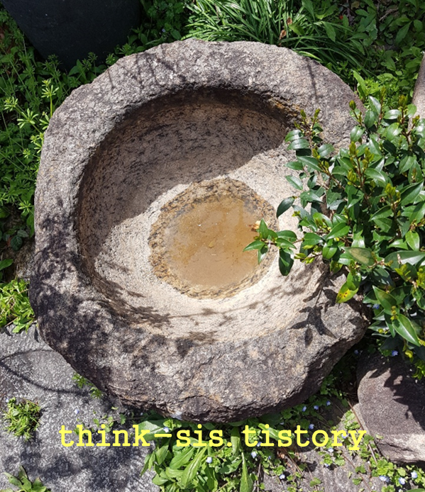

손가락 빨기, 손톱 물어 뜯는 행동 의의 및 특성
아이가 손가락을 빠는 행동은 출생 후 3~4개월에 나타나며, 7개월이 되면 강해지기 시작하여 18개월경에 가장 심해지고 3세경이 되면 약화된다. 6개월 미만에 손가락을 빠는 행동은 자신의 감각을 만족시키는 행동이므로 큰 문제가 되지 않는다. 하지만 이후에도 계속 손가락을 빠는 경우는 아이가 자신감이 없거나 무료함을 느끼는 경우이다. 이때는 다른 일에 관심을 가지도록 하거나 자신감을 가질 수 있도록 도와주어야 한다.
손톱을 물어뜯는 경우는 보통 4세 이후에 나타나는데, 5~6세에도 손톱을 물어뜯는 경우 대체로 정서적으로 불안하거나, 욕구불만, 초조감을 나타낸다. 아이의 가장 큰 원인은 심리적 스트레스 및 불안감 때문이다. 손톱을 물러 뜯는 행동은 영유아기는 약 30% 정도가 가지고 있는 흔한 버릇 중 하나다. 이러한 버릇을 가지고 있다고 하여 심하게 야단을 치거나 억지로 못하게 하면 일부러 더 똑같은 행동을 반복할수 있으므로 주의해야 한다.
아이가 손톱 주위의 감염, 손톱 무좀, 피부습진 등 손가락에이상이 생기는 경우 정서적⋅심리적 문제가 생길 수 있다. 이러한 원인은 양육자의 엄격하고 강압적으로 완벽을 요구하는 양육방식과 보육기관의 통제와 억압에 의한심리적 압박으로 무료함을 잊으면서 불안과 긴장을 해소하기 위한 방편의 행동으로 나타난다.

손가락 빨기, 손톱 물어 뜯는 아이를 위한 지도 방법
1) 불안감의 근원 파악
손톱을 물어뜯는 행동은 손가락을 빠는 것과는 다르다. 손가락을 빠는 이유는이를 통해 만족을 얻고자 하는 것이지만 손톱을 물어뜯는 행동은 아이의 긴장이나 불안이 원인으로 작용하는 것이다. 우선 긴장이나 불안을 일으키는 원인이 무엇인지 알아보고 적절한 방법으로 해소시켜 주어야 한다. 양육자의 지나친 기대,형제들 간의 경쟁적인 분위기, 아이를 대하는 태도가 신경질적이며 행동을 지나치게 통제하는 것은 아닌지 확인한 후 내재된 불안감을 완화시켜 준다.
2) 내재된 공격성 해소
심리적으로 불안하거나 과민한 경우 손가락을 빨거나 손톱을 물어뜯기도 한다.내적 감정과 불안에서 벗어나는 수단으로 손톱을 깨무는 행위를 선택하는 경우가있으므로 일상생활을 민감하게 살펴보아야 한다. 이 같은 문제행동은 대부분 불안이나 긴장감에서 나타나므로 하루에 몇 번 어느 시간에 어떤 상황에 행동을 하는지 등의 세심한 관찰을 통해 불만의 원인을 해소시키도록 한다.
3) 스트레스를 통한 자신감
손톱이나 입술을 물어뜯으면, 치아 자극과 함께 일종의 신체 훼손이 일어나게되어 뇌에 자극이 되기 때문에 긴장이 해소되기도 한다. 아이가 손톱 뜯을 때 잔소리를 하거나 혼을 내면, 자신감이 낮아지거나 죄책감을 가질 수 있으므로 적절한 설명이 필요하다. 대부분 스트레스로 인한 긴장감, 불안함을 감소시키기 위해손톱을 물어뜯기 때문에 심리적인 치료가 필요하다.
4) 놀이를 통한 행동 수정
아이가 정해진 규칙을 잘 지키거나 아이의 손톱이 조금이라도 자라난 것을 발견하면 아낌없는 칭찬과 격려로 강화를 해주어야 한다. 손톱을 물어뜯는 행동을고치기 위한 노력을 지지해 주어야 자신감을 가지게 될 것이다. 손톱을 잘 깎고예쁘게 다듬어 주고 손가락을 사용하는 작업이나 놀이를 시켜 손톱을 물어뜯을
여유를 주지 않는 것도 좋은 방법이다.
5) 심리적 부담 줄이기
아이를 자주 안아주거나 쓰다듬어 주는 행동을 통해 사랑받고 있다고 느끼고긴장감을 해소할 수 있도록 한다. 아이의 행동이 변하지 않으면 청결 유지의 중요성 등에 대한 이야기를 나누어 합리적 인식을 이끌어 내는 방법도 있다. 아이에게 너무 지나친 요구, 잔소리 등이 어떤 심리적인 부담을 주는지 생각해 보고 태도를 바꿔야 한다.
6) 대화를 통한 상호작용 증가
아이들은 말로 표현하는 데 아직 미숙하다 보니 불안이나 속상함을 표현하지못하고 행동으로 자신의 감정을 나타낼 수 있다. 아이가 자신이 존중받고 있다는느낌을 얻을 수 있도록 해야 한다. 손가락을 빨지 못하도록 혼내는 것보다는 다른행동으로 바꿀 수 있도록 도와주는 것이 좋다. 불안을 줄이는 방법과 힘든 부분을말로 표현할 수 있도록 유도하는 것도 좋은 지도 방법이다.
7) 양육자 역할의 스트레스 감소
양육자가 자주 부부싸움을 하거나 계속 잔소리를 하는 경우 불안한 환경으로인해 스트레스를 받는 것은 아닌지 확인한다. 아이가 소극적이고 내성적인 경우자신의 마음을 제대로 표현하지 못하고, 자기도 모르게 반복적으로 손톱을 물어뜯을 수 있다. 아이가 손톱을 물어뜯을 때 혼을 내거나 매로 고치면 부작용이 크다. 손톱을 물어뜯지 않을 때 칭찬하는 방법을 찾아야 한다.
출처: 영유아생활지도 10장 부적응행동의 지도 방안 중에서
2021.11.16 - [분류 전체보기] - 정서, 행동의 발달 - 정서표현의 특징과 요인
정서, 행동의 발달 - 정서표현의 특징과 요인
인간은 기쁨이나 슬픔, 두려움과 불안과 같은 기본 정서를 가지고 태어난다. 정서는 자주 변하고 빈번하게 나타낼 수 있도록 해야 한다. 정서는 내적·외적 자극에 직면하면 발생하거나 자극에
think-sis.tistory.com
영유아생활지도 및 상담-박순길, 김동례, 선애순 공저(2021), 공동체.